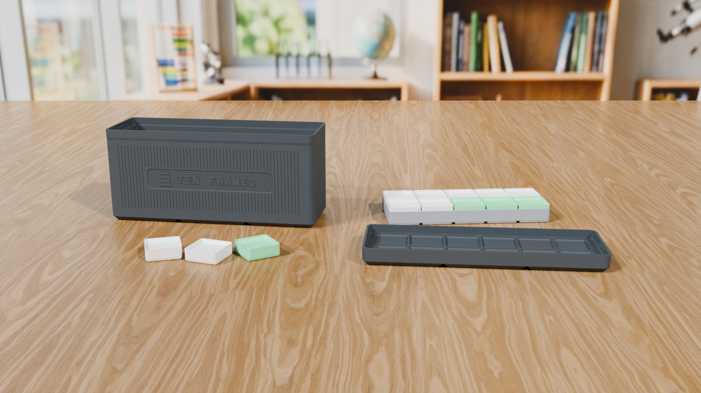
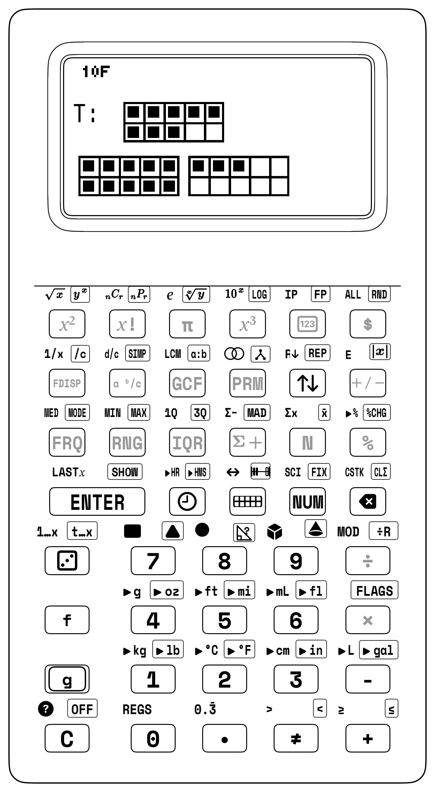
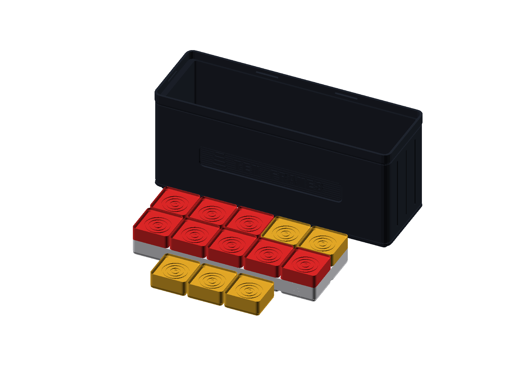
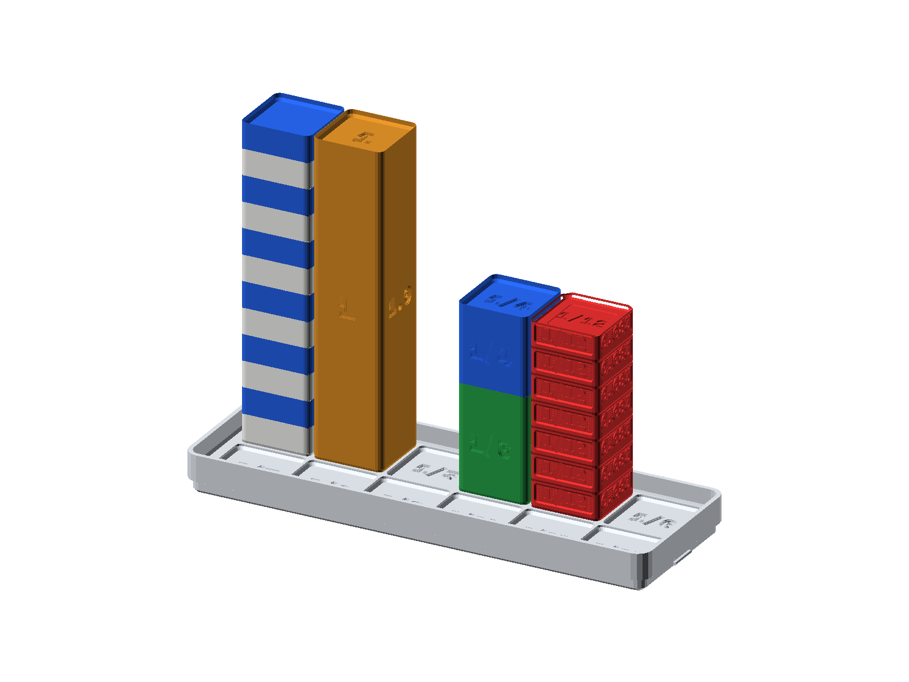
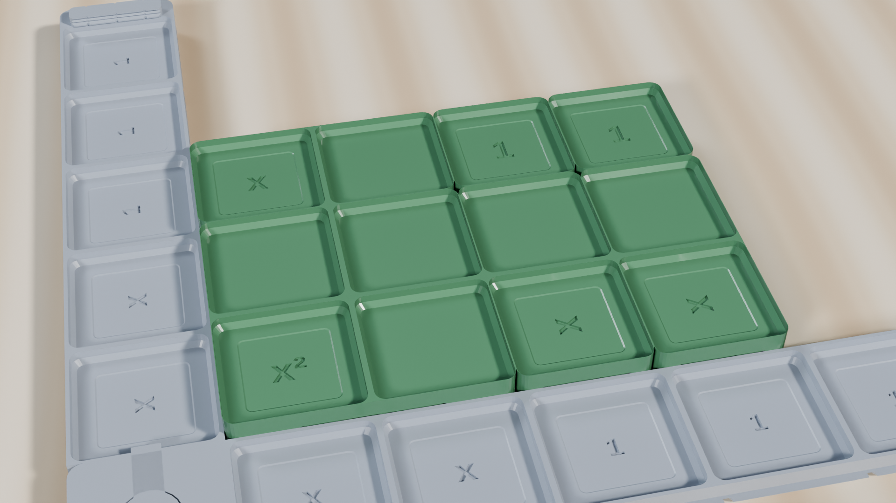
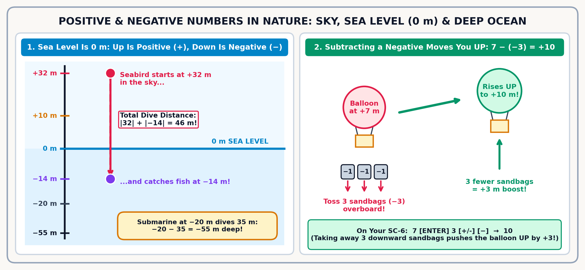
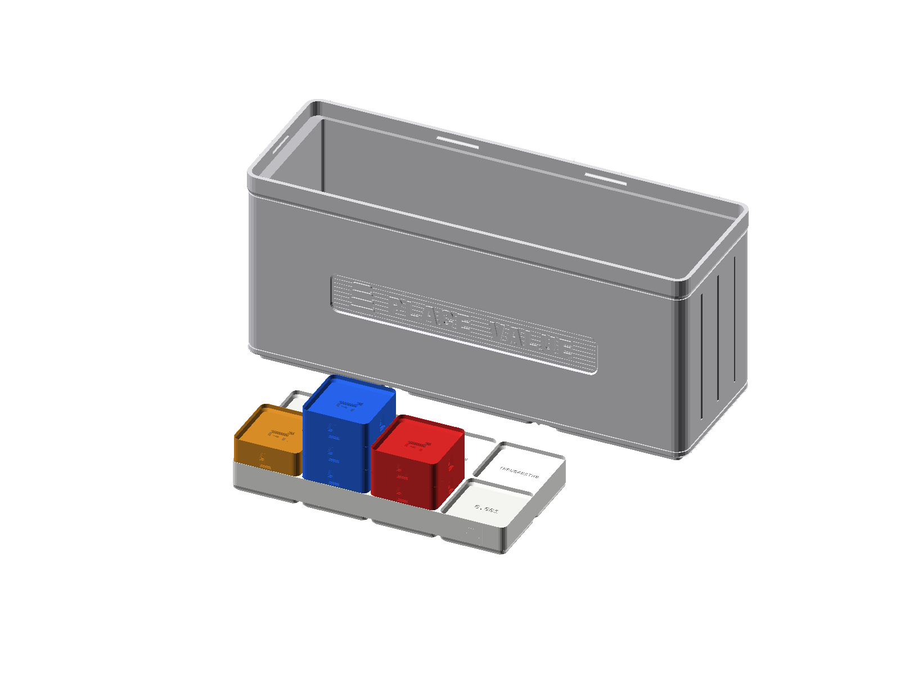

Chapter 3: Ten-Frames, Number Lines & Place Value
3.1 How Ten Fingers and an Empty Shell Created Place Value
Imagine trying to count 250 sheep by dropping 1 pebble into your pocket for every sheep that walks past the gate. By noon, your pockets would rip wide open and your pants would fall down! Ancient builders and merchants had the same problem when they tried to count thousands of bricks or bags of grain. Without a smart way to group numbers by tens, Ancient Egyptian scribes had to chisel thirty-six separate symbols into stone—nine coiled ropes for the thousands, nine lotus flowers for the hundreds, nine heel bones for the tens, and nine vertical strokes for the ones—just to write the single four-digit number \(9,999\)!
Then ancient mathematicians in India and the Maya world invented the ultimate math cheat code (Ifrah, 2000): Place Value and the number Zero (0).
Look down at your two hands: you have 10 fingers. Thinkers realized that you don't need thousands of different symbols to write giant numbers. You only need ten digits (0 through 9) and one clever rule: a digit's value depends on which slot it sits in! Drawing an empty shell in the sand—the world's first Zero (0)—meant "this slot is empty, so hold this spot open!" Because 0 holds the empty slots open, a single digit 1 can mean 1 sheep (1), 10 sheep (10), 100 sheep (100), or ten million stars (10,000,000) just by sliding one column to the left.
With your StackCalc SC-6 and your 3D-printed math blocks, you can build and test this ten-finger cheat code with your own hands. When you snap counters into the Ten-Frame Studio or slide the two-color beads across the Number Rack, you can see every group of 5 and 10 right on your desk. Throughout this chapter, you will open four visual picture windows on your keypad—[▦] (Ten-Frame Studio), [g] [COUNT] (Number Rack), [f] [LINE] (Open Number Line), and [PV] (Place Value X-Ray)—using [.] to drop single counters, combining and separating numbers on the stack, and returning to standard numbers anytime with [NUM].
3.1.1 Building Numbers from Blocks to the Stack
When you look at bare digits on a flat worksheet, a sum like \(8 + 5 = 13\) can look like two symbols jumping to a new number without showing why they snap together into one ten and three ones. When you build with your 3D-printed math blocks first and then tap [▦] or [f] [LINE] on your keypad, your StackCalc SC-6 draws that exact same counter tray or number-line trail on the daylight screen right above your four number shelves:

Each of the four visual picture keys ([▦], [g] [COUNT], [f] [LINE], [PV]) pairs directly with a physical tray on your desk—turning the screen into a live window where groups of five, full tens, and place-value columns click into place right before your eyes:

3.1.2 The 1-to-10 Staircase & Friends of Ten
Have you ever tried adding all the counting numbers from \(1\) to \(10\) (\(1 + 2 + 3 + 4 + 5 + 6 + 7 + 8 + 9 + 10\)) without losing track halfway through? You can discover a wonderful Friends-of-Ten shortcut right on your desk using your Unit Miniblocks (where each block adds \(7.0\text{ mm}\) of height) and your 10-Rod (which stands \(70.0\text{ mm}\) tall, matching 10 stacked blocks):
1. Build the Staircase: Line up towers of \(1, 2, 3, 4, 5, 6, 7, 8,\) and \(9\) Unit Miniblocks in a row right beside your 10-Rod (\(10\)). Together they form a 10-step staircase climbing step by step up to the top of the 10-Rod.
2. Snap the Friends of Ten Together: Pick up the smallest step (\(1\text{ block}\)) and snap it on top of the \(9\text{-block}\) step—together they stand completely flush with the 10-Rod (\(1 + 9 = 10\))! Next, snap the \(2\text{-block}\) step onto the \(8\text{-block}\) step (\(2 + 8 = 10\)), the \(3\text{-block}\) step onto the \(7\text{-block}\) step (\(3 + 7 = 10\)), and the \(4\text{-block}\) step onto the \(6\text{-block}\) step (\(4 + 6 = 10\)).
3. Count Your Ten-Rods at a Glance: Look at your desk now: instead of ten messy piles, you have five matching Ten-Rods (\(10\), \(9+1\), \(8+2\), \(7+3\), and \(6+4\), worth \(5 \times 10 = 50\)) plus the single middle tower of \(5\) blocks standing by itself in the center. On your SC-6 stack, key in 10 [ENTER] 5 [×] 5 [+] to see those five tens and one five unite into 55!
3.1.3 Spotting Number Partners on the Ten-Frame
Roll a six-sided game die across a table and you know right away when it lands on 5, without pointing your finger at the dots and counting \(1, 2, 3, 4, 5\). For tiny groups of \(1\) to \(4\), your eyes recognize the exact count immediately; for larger numbers, your brain spots friendly groups of 5 and 10 and snaps them together at a glance. When you see \(7\) counters sitting in a ten-frame tray, you never count to seven by ones—you immediately see a full top row of \(5\) plus \(2\) more on the bottom (\(5 + 2 = 7\)).
Every visual mode on your SC-6 screen—and every 3D-printed tray on your desk—is built around those same landmarks of 5 and 10 so number patterns jump right out at you. A raised divider ridge down the middle of both 10-pocket Ten-Frame Trays splits each row of coral-red and amber-gold counter disks into touch-friendly groups of five, just as the two smooth rods of your Number Rack (Rekenrek) group 20 sliding beads into 5 red and 5 white beads per row to mirror Waiting Shelf \(Y\) and Ground Shelf \(X\). Even your Place Value Trays pair their digit blocks (0–9) with stackable +1 regrouping blocks so that 10 stacked blocks stand the exact same height as a Ten-Frame 10-Rod!
3.2 Ten-Frame Bridges, Step-Counter Towers & Tile Staircases
Think of the four visual sandbox keys ([▦], [g] [COUNT], [f] [LINE], and [PV]) as special camera lenses that let you peek inside your calculator's shelves and see your numbers as real blocks, beads, and number trails.
Type 7 onto Shelf \(X\) and press [▦]. Right away, the screen opens the Ten-Frame Studio with two visual rows labeled T (for the waiting number above) and X (for your active workbench below). For numbers from \(1\) to \(10\), a single \(5 \times 2\) ten-frame tray is drawn cleanly on the row; as soon as a number grows to \(11\text{–}20\), a second side-by-side ten-frame tray appears automatically right next to the first! Inside the ten-frame on Row X for 7, all 5 pockets of the top row are filled with dark round counters ([●][●][●][●][●]), while the bottom row holds 2 counters followed by 3 empty pockets ([●][●][ ][ ][ ]).
While you are inside the Ten-Frame Studio, the decimal key [.] acts like your own hand dropping counters into the tray one at a time. Starting from \(X = 7\), watch what happens each time you tap [.]:
- Tap [.] once and an 8th counter drops into the bottom row (\(X = 8\)).
- Tap [.] again and a 9th counter lands next to it (\(X = 9\)), leaving just 1 empty pocket in the tray.
- Tap [.] a third time and the 10th counter fills all 10 pockets of the tray (\(X = 10\)), showing one complete group of ten!
- Tap [.] one more time (\(X = 11\)) and a second side-by-side ten-frame appears automatically as the 11th counter hops into the first pocket of Frame 2, showing \(10 + 1 = 11\) right before your eyes.
Spotting the Partner to Ten & Switching Lenses Anytime: Because Ten-Frame mode (
[▦]) draws whatever number is already sitting on Shelf \(X\), type a number like7first and then tap[▦]to see its counters pop into the tray! With 7 counters in Frame 1, you see 3 empty pockets waiting at the end of the row—so pressing3[+]fills all 10 pockets of the tray and lands on \(X = \mathbf{10}\). Whenever you want to return from any visual picture window ([▦],[g] [COUNT],[f] [LINE], or[PV]) to regular stack digits, just tap[NUM](or tap[C]once when you aren't typing digits) to switch back while keeping every shelf (\(T, Z, Y, X\)) completely intact. In stack view,[NUM]starts with Whole Number Mode ON (so typing12.34begins a mixed fraction); tapping[NUM]a second time (or tapping[f] [ALL]/[g] [FIX]) toggles Whole Number Mode OFF whenever you want to type a decimal like12.34!
3.2.1 Making a Ten First (\(8 + 5 = 10 + 3 = 13\))
When you first add two numbers that cross past 10 (like \(8 + 5\)), counting on your fingers ("eight... nine, ten, eleven, twelve, thirteen") can feel slow and tricky. The Ten-Frame Studio shows you a much faster way: instead of counting by ones, you slide just enough counters from the second number to finish filling the first tray of 10, and drop the remaining counters into the second tray! $\(\mathbf{8 + 5 = 8 + (2 + 3) = (8 + 2) + 3 = 10 + 3 = 13}\)$

First, build the bridge on your desk: place 8 coral-red counters into Frame 1 of your physical tray ([●][●][●][●][●] | [●][●][●][ ][ ], leaving 2 empty pockets), and hold 5 amber-gold counters in your hand. Instead of adding all 5 at once, split your 5 gold counters into 2 + 3:
1. Drop 2 gold counters into the two empty pockets of Frame 1 ([●][●][●][●][●] | [●][●][●][●][●]) to lock in a Full 10 (\(8 + 2 = 10\)).
2. Drop the remaining 3 gold counters into the fresh second frame ([●][●][●][ ][ ] | [ ][ ][ ][ ][ ]).
3. Read the two trays together: 1 full tray of 10 + 3 extras = 13! On your SC-6, key in [▦] 8 [ENTER] 5 [+] to see 13, or step through the bridge inside your Ten-Frame window (8 [▦], then 2 [+] to fill all 10 pockets of Frame 1, then 3 [+] to open Frame 2 with the remaining 3 counters):
| Keystroke | Register T | Register Z | Register Y | Register X | What Happens on the Stack |
|---|---|---|---|---|---|
8 [▦] |
0 | 0 | 0 | 8 | Place 8 counters into Frame 1 on Shelf \(X\) (leaving 2 empty pockets). |
2 [+] |
0 | 0 | 0 | 10 | Drop 2 counters into the empty pockets to complete a full 10 in Frame 1! |
3 [+] |
0 | 0 | 0 | 13 | Drop the remaining 3 counters into Frame 2 (\(10 + 3 = 13\) on Shelf \(X\)). |
3.2.2 Bridging Across Ten in Everyday Life
Once you start looking for landmarks of five and ten, you spot them everywhere you go. Suppose you step out onto the porch at dusk and spot 5 fireflies blinking near the railing (filling the top row of Frame 1) and 3 more down by the back fence (sitting on the bottom row); keying 5 [ENTER] 3 [+] snaps the 5-row and the 3-row together into 8 fireflies on Shelf \(X\).
What if your first ten-frame is almost full and a new handful pushes you past 10? Picture sorting shiny creek stones into a 10-slot pebble carton where 9 slots are already full (leaving just 1 empty pocket) and you find 4 more quartz pebbles in the creek. Instead of counting up one by one, split the 4 new pebbles into \(1 + 3\) so 1 pebble snaps the first carton shut at 10 and the other 3 pebbles start the second carton (9 [ENTER] 1 [+] 3 [+] \(\to\) 13):
| Keystroke | Register T | Register Z | Register Y | Register X | What Happens on the Stack |
|---|---|---|---|---|---|
9 [ENTER] |
0 | 0 | 9 | 9 | Put 9 quartz creek pebbles onto Shelf \(X\) and lift a copy to Shelf \(Y\). |
1 [+] |
0 | 0 | 0 | 10 | Add 1 pebble to fill the last pocket of Frame 1 (\(9 + 1 = 10\) on Shelf \(X\)). |
3 [+] |
0 | 0 | 0 | 13 | Add the remaining 3 pebbles into Frame 2 (\(10 + 3 = 13\) pebbles on Shelf \(X\)). |
You see that same bridge-across-ten move down at a pond when Log 1 holds 9 green frogs and 6 brown frogs hop over: 1 frog fills Log 1 to 10 and the other 5 frogs land on Log 2 (9 [▦] 1 [+] 5 [+] \(\to \mathbf{15}\)). Or picture an arcade basketball shootout where you score 7 points in Round 1, leaving 3 empty pockets in Frame 1. When you sink 6 bonus points in the lightning round, split 6 into twin halves (\(3 + 3\)) via 7 [ENTER] 3 [+] 3 [+] to lock Frame 1 at 10 and land on 13 points—or tap [f] [LASTX] [+] right after the first 3 [+] to reuse 3 in a single click!
Now run that ten-frame bridge in reverse for subtraction. Every frame at a ten-pin bowling alley sets up 10 maple pins in a triangle (\(1 + 2 + 3 + 4 = 10\)). Knock down 4 pins on your first roll via 10 [ENTER] 4 [-], and Frame 1 shows 6 pins left standing for your spare shot (and when you pick up the spare, tapping [f] [LASTX] [+] reunites \(6 + 4 = 10\)!). Even when you start above ten—say, holding 14 colored markers (one full 10-pack plus 4 loose markers) and lending 6 markers to a friend—you can step backward across the 10-line in two easy hops. Split \(-6\) into \(-4\) and \(-2\) via 14 [ENTER] 4 [-] 2 [-], handing over the 4 loose markers first to reach a clean 10, and then pulling 2 markers from the 10-pack to leave 8 markers:
| Keystroke | Register T | Register Z | Register Y | Register X | What Happens on the Stack |
|---|---|---|---|---|---|
14 [ENTER] |
0 | 0 | 14 | 14 | Put 14 colored markers onto Shelf \(X\) and lift a copy to Shelf \(Y\). |
4 [-] |
0 | 0 | 0 | 10 | Hand over the 4 loose markers from Frame 2, leaving a full 10-pack on Shelf \(X\). |
2 [-] |
0 | 0 | 0 | 8 | Take 2 more markers from the 10-pack, leaving 8 markers on Shelf \(X\). |
3.2.3 Step-Counter Towers & Building a 12-Tile Tower up to 84 Millimeters
Have you ever noticed that counting forward (\(1, 2, 3, 4 \dots\)) is really just adding \(1\) over and over again? On your SC-6, you can watch the 1 sit right on Shelf \(Y\) while you stack real \(7.0\text{ mm}\) counting tiles into a rising tower on your desk!

Every interlocking Counting Tile adds exactly \(7.0\text{ mm}\) of visible height. As you snap them together one by one, watch how your growing tower matches the exact heights of your 84 mm Fraction Studio blocks:
Stacked Tile Count (X) |
Total Tower Height | How It Matches Your Fraction & Geometry Blocks |
|---|---|---|
Tile 1 (X = 1) |
\(7.0\text{ mm}\) | Matches one \(1/12\) Fraction Block |
Tile 2 (X = 2) |
\(14.0\text{ mm}\) | Matches one \(1/6\) Fraction Block |
Tile 3 (X = 3) |
\(21.0\text{ mm}\) | Same height as \(1\) Unit Cube (or a \(1/4\) Fraction Block) |
Tile 4 (X = 4) |
\(28.0\text{ mm}\) | Matches one \(1/3\) Fraction Block |
Tile 6 (X = 6) |
\(42.0\text{ mm}\) | Halfway mark (matches the \(1/2\) Fraction Block) |
Tile 12 (X = 12) |
\(84.0\text{ mm}\) | Matches the full \(1\text{-Whole}\) Fraction Tower! |
Let's climb that 12-story tile tower on your calculator while snapping real \(7.0\text{ mm}\) tiles together on your desk. On your standard 4-shelf stack (4-LVL), if you only typed 1 [ENTER] 1 [+], the count would stop at 2 because Shelf \(Z\) and Top Shelf \(T\) are still holding 0—so you press 1 [g] [REP] first to copy 1 across all four shelves (\(T, Z, Y, X\)) and feed a fresh 1 down from Top Shelf \(T\) on every tap of [+]! (For younger builders who switch [g] [FLAGS] to optional 2-Shelf Mode (2-LVL), Shelf \(Y\) itself is the top shelf, so tapping 1 [ENTER] 1 and pressing [1] [ENTER] [1] [+] reaches \(X = 2\) as you snap a second tile on top at \(14.0\text{ mm}\), and each additional tap of [+] climbs through \(3\text{ tiles}\) at \(21.0\text{ mm}\), \(4\text{ tiles}\) at \(28.0\text{ mm}\), \(6\text{ tiles}\) at \(42.0\text{ mm}\), and all the way to \(12\text{ tiles}\) at \(84.0\text{ mm}\), standing flush with the white 1-Whole Fraction Tower!):
| Keystroke | Register T | Register Z | Register Y | Register X | What Happens on the Stack |
|---|---|---|---|---|---|
1 |
0 | 0 | 0 | 1 | Place the first \(7.0\text{ mm}\) tile (1) onto Shelf \(X\). |
[g] [REP] |
1 | 1 | 1 | 1 | Copy 1 across all four shelves (\(T, Z, Y, X\)) to lock the step size. |
[+] |
1 | 1 | 1 | 2 | Snap on Tile 2 (\(14.0\text{ mm}\)); Top Shelf \(T\) keeps a fresh 1 ready. |
[+] |
1 | 1 | 1 | 3 | Snap on Tile 3 (\(21.0\text{ mm}\), matching the \(1/4\) Fraction Block). |
[+] |
1 | 1 | 1 | 4 | Snap on Tile 4 (\(28.0\text{ mm}\), matching the \(1/3\) Fraction Block). |
[+] |
1 | 1 | 1 | 5 | Snap on Tile 5 (\(35.0\text{ mm}\) tower height). |
[+] |
1 | 1 | 1 | 6 | Snap on Tile 6 (\(42.0\text{ mm}\), matching the \(1/2\) Half-Tower!). |
Once your tower stands 10 or 12 tiles tall, you can also run a rocket launch countdown in reverse by unstacking a 10-tile tower one block at a time. Start the countdown by keying in 10 [ENTER] 1, popping 1 tile off the top of your tower as you tap [-] (\(X = \mathbf{9}\)), and stepping down through the upper half of the tower ([-] \(\to 8\), [-] \(\to 7\), [-] \(\to 6\)). Then keep popping tiles off through the final five seconds ([-] \(\to 5\), [-] \(\to 4\), [-] \(\to 3\), [-] \(\to 2\), [-] \(\to 1\), and [-] \(\to \mathbf{0}\))—liftoff!
3.2.4 Rhythmic Counting from Gym Benches to Jupiter's Moons
Once you get the feel of adding or subtracting a steady step size, you can count in larger rhythmic jumps across sports, rocket launches, and astronomy. Picture counting 10 pairs of basketball sneakers lined up along the gym bench: when you set [g] [FLAGS] to 2-LVL two-shelf constant mode, keying 2 [ENTER] 2 [+] steps evenly by twos (4, 6, 8, 10, 12, 14, 16, 18) all the way to 4 sneakers while Shelf \(Y\) keeps the step size (2) locked in place. In the same way, when a NASA launch test counts down a 50-second hold in 5-second checkpoints (50, 45, 40, 35...), keying 50 [ENTER] 5 [-] 5 [-] 5 [-] 5 [-] 5 [-] 5 [-] 5 [-] 5 [-] 5 [-] 5 [-] steps down five seconds at a time until Shelf \(X\) reaches liftoff at 0.
And in your everyday 4-Shelf Mode (4-LVL), you can run any rhythmic step counter just as easily with [g] [REP]. Out on the basketball court, suppose a player sinks four 3-point shots in a row (3, 6, 9, 12). Pressing 3 [g] [REP] [+] [+] [+] fills all four shelves (\(T, Z, Y, X\)) with 3 so Top Shelf \(T\) feeds a fresh 3 onto the scoreboard on every shot:
| Keystroke | Register T | Register Z | Register Y | Register X | What Happens on the Stack |
|---|---|---|---|---|---|
3 [g] [REP] |
3 | 3 | 3 | 3 | The [g] [REP] key copies 3 onto every shelf (\(T, Z, Y, X\)) |
[+] |
3 | 3 | 3 | 6 | First addition reaches 6; Top Shelf \(T\) keeps a fresh copy of 3 |
[+] |
3 | 3 | 3 | 9 | A fresh 3 drops down from Top Shelf \(T\); total reaches 9 |
[+] |
3 | 3 | 3 | 12 | Top Shelf \(T\) feeds another 3 so Shelf \(X\) reaches 12 |
Because Top Shelf \(T\) copies itself every time the stack drops, you never run out of 3s! Astronomers see that exact kind of repeating beat out in deep space around Jupiter's three inner Galilean moons (Io, Europa, and Ganymede). When French mathematician Pierre-Simon Laplace timed their orbits—Io taking \(1.77\text{ Earth days}\), Europa taking \(3.55\text{ days}\) (\(2\times\) Io), and Ganymede taking \(7.15\text{ days}\) (\(4\times\) Io)—he discovered a locked \(1:2:4\) orbital resonance: for every 1 orbit of Ganymede, Europa completes 2 orbits and Io completes 4 orbits, tugging on Io in a rhythmic gravitational beat that has kept its interior molten with active volcanoes for billions of years.
3.2.5 Odd-Number Corner Borders & Square Numbers
Here is one of the coolest number mysteries in all of mathematics. Look at what happens when you add consecutive odd numbers starting from \(1\): $\(1 = 1 = 1^2\)$ $\(1 + 3 = 4 = 2^2\)$ $\(1 + 3 + 5 = 9 = 3^2\)$ $\(1 + 3 + 5 + 7 = 16 = 4^2\)$ $\(1 + 3 + 5 + 7 + 9 = 25 = 5^2\)$
Wait—why does adding odd numbers (\(1, 3, 5, 7, 9 \dots\)) always produce a perfect square number (\(1, 4, 9, 16, 25 \dots\)) without a single exception?

You can solve this mystery with your own hands in thirty seconds! Grab 16 Counting Tiles from your Counting & Array Studio—1 White, 3 Cobalt Blue, 5 Radiant Gold, and 7 Slate Gray—and build the pattern right on your desk:
- Stage 1 (\(1\text{ Tile} = 1 \times 1\)): Place 1 White tile in the bottom-left corner of your desk mat. That single tile is a tiny \(1 \times 1\) square (\(1\)).
- Stage 2 (\(1 + 3 = 4\text{ Tiles} = 2 \times 2\)): Now ask yourself: what do I need to add to make this \(1 \times 1\) square grow into a \(2 \times 2\) square? You need 1 tile on top, 1 tile on the right side, and 1 corner tile where they meet (\(1 + 1 + 1 = 3\)). Wrap those 3 Blue tiles around the White tile like an L-shaped collar—and look down: you have a solid \(2 \times 2 = 4\) square!
- Stage 3 (\(1 + 3 + 5 = 9\text{ Tiles} = 3 \times 3\)): To grow your \(2 \times 2\) square into a \(3 \times 3\) square, you must cover its 2 top edges, its 2 right edges, plus 1 new corner tile (\(2 + 2 + 1 = 5\)). Wrap 5 Gold tiles around the corner to complete a \(3 \times 3 = 9\) square!
- Stage 4 (\(1 + 3 + 5 + 7 = 16\text{ Tiles} = 4 \times 4\)): To grow from \(3 \times 3\) to \(4 \times 4\), you need 3 tiles on top, 3 tiles on the right, and 1 corner tile (\(3 + 3 + 1 = 7\)). Wrap 7 Gray tiles around the outside to lock in a \(4 \times 4 = 16\) square!
Now you see the secret: every odd number is really two matching side arms plus one corner tile! Whenever you wrap that L-shaped border around a square, it grows the width by 1 and the height by 1 at the exact same time.
You can watch those growing squares form right on the SC-6 stack—and even go beyond the 16 tiles on your desk to build \(5 \times 5\) and \(6 \times 6\) squares! Start by pressing [1] [ENTER] [3] [+] to reach \(\mathbf{4}\) (\(2^2\)), matching your 1 white center tile (\(Y = 1\)) wrapped by a 3-tile blue L-border (\(X = 4\)).
Next, tap 5 [+] to wrap the 5-tile gold border into \(\mathbf{9}\) (\(3 \times 3\) square), and tap 7 [+] to wrap the 7-tile gray border into \(\mathbf{16}\) (\(4 \times 4\) square). Keep the pattern rolling: tap 9 [+] to reach \(\mathbf{25}\) (\(5 \times 5\) square), and tap [1] [1] [+] to wrap an 11-tile border into \(\mathbf{36}\) (\(6 \times 6\) square) before pressing [f] [√x] to reveal \(\mathbf{6}\)—the exact side length of your \(6 \times 6\) square!
3.2.6 How Triangular Step Ladders Build Rectangular Arrays
Earlier in this chapter, we folded a 10-step staircase of blocks into Friends of Ten (\(1 + 2 + \dots + 10 = 55\)). Now let's discover an even more powerful geometric trick that works for any staircase of counting numbers—like \(1 + 2 + 3 + 4 + 5 + 6 = 21\).
Using your 24-Tile Four-Color Counting & Array Studio, build six rising columns of tiles on your desk: \(1\text{ tile}\), then \(2\text{ tiles}\), then \(3, 4, 5,\) and \(6\text{ tiles}\). Notice how your 21 tiles form a right triangle whose top edge climbs in a jagged 6-step staircase.
How can you find the area of a jagged triangle without adding every column one by one? Imagine a friend builds an identical 21-tile staircase (\(1 + 2 + 3 + 4 + 5 + 6\)) and flips theirs upside-down right on top of yours: - Their tallest column of \(6\) lands on top of your shortest step of \(1\), making a column \(7\) tiles tall (\(1 + 6 = 7\)). - Their step of \(5\) lands on your step of \(2\), also making \(7\) tiles tall (\(2 + 5 = 7\)). - Every single column locks together at \(7\) tiles tall across all \(6\) columns—forming a solid \(6 \times 7 = 42\) rectangle! (And even with a single 24-tile kit, you can fold your 6-step staircase in half—snapping \(1\) onto \(6\), \(2\) onto \(5\), and \(3\) onto \(4\)—to form a \(3 \times 7 = 21\) rectangle.)
Because two identical staircases make a \(6 \times 7 = 42\) rectangle, one staircase is simply half of that rectangle (\(42 \div 2 = 21\)):
| Keystroke | Register T | Register Z | Register Y | Register X | What Happens on the Stack |
|---|---|---|---|---|---|
6 [ENTER] |
0 | 0 | 6 | 6 | Place 6 staircase columns onto Waiting Shelf \(Y\) |
7 [×] |
0 | 0 | 0 | 42 | Two interlocked staircases form a \(6 \times 7 = 42\) rectangle (\(X = 42\)) |
2 [÷] |
0 | 0 | 0 | 21 | Half the rectangle gives one triangular staircase (\(42 \div 2 = 21\)) |
Remember this "put two staircases together into a rectangle and cut it in half" secret—at the start of Chapter 4, you will see how a 9-year-old boy used this exact trick to add \(1\) through \(100\) in seconds!
3.3 Hopping Along the Number Line & Five-Bead Racks
If the Ten-Frame Studio lets you see numbers as trays of counters, the Open Number Line ([f] [LINE]) turns addition and subtraction into a hiking trail across your screen.
3.3.1 Forward Hops, Backward Hops & The Two-Tap Return Trip
Whenever you press [f] [LINE], your screen draws a crisp horizontal ruler trail (0, 1, 2, 3, 4, 5, 6, 7, 8, 9, 10, 11...) that automatically scales its tick marks (\(1, 2, 5,\) or \(10\)) to fit your journey. As soon as you add or subtract—for example, 2 [ENTER] 5 [+]—the top of the screen displays the equation 2 + 5 = 7 on the left and X:7 on the right, while a curved jump arc labeled +5 leaps right above the number line from tick 2 to tick 7.
Watching the arc leap across the screen connects three ideas at once—where you started (Shelf \(Y\)), how far and which way you hopped, and where you landed (Shelf \(X\)). For a Forward Jump (Addition) like 2 [ENTER] 5 [+] (\(\to 7\)), an arc sweeps to the right labeled +5, showing your number growing along the trail; for a Backward Jump (Subtraction) like 9 [ENTER] 4 [-] (\(\to 5\)), an arc leaps to the left labeled -4, showing you walking back down the trail. Even better, you can use the [f] [LASTX] Return-Trip Trick to hop right back to your starting milepost in two taps: right after 2 [ENTER] 5 [+] lands on 7, tap [f] [LASTX] [-] and watch LASTX remember your 5-step jump and arc straight back to 2!
3.3.2 How Red Kangaroos Cross the Australian Outback
In the Australian Outback, a full-grown red kangaroo (Osphranter rufus) stores elastic energy in its giant Achilles tendons like a pair of pogo-stick springs, bounding up to \(9\text{ meters}\) (\(30\text{ feet}\)) in a single leap and cruising across the desert for kilometers without tiring. The Open Number Line ([f] [LINE]) turns real-world outback distances and elevations into visual jump arcs right on your screen.
Picture a tagged red kangaroo starting near a dry creek bed at kilometer marker 14 and bounding forward 8 kilometers across the red sand plains to reach fresh desert grass. Which trail marker does the kangaroo reach?
On your Open Number Line ([f] [LINE]), start at tick 14 and launch a forward arc of +8. Just like bridging across 10 on a ten-frame, your mind can hop \(+6\) to land on milestone 20 and \(+2\) more to reach marker 22: when you key in 14 [ENTER] 8 [+], the jump arc sweeps across the twenty mark and lands squarely on kilometer 22.
A little farther along the trail, a tall red sand dune rises to an elevation of 23 meters, and the trail drops 7 meters down into a shaded eucalyptus grove. What is the grove's elevation?
Pin tick 23 on your Open Number Line and launch a backward arc of -7 past the 20 mark—stepping back 3 meters to hit 20, and 4 more meters to land on 16: running 23 [ENTER] 7 [-] traces the downward hike to 16 meters. (Now try the Instant Reverse-Hop Check: press [f] [LASTX] [+] and watch the -7 hike sitting in LASTX reverse into a +7 climb right back to 23.)
What if a desert trek covers three stages in a row: 18 kilometers from base camp to Spinifex Ridge, 5 kilometers to a giant boab tree, and 7 kilometers to a waterhole billabong? Watch how automatic stack lift chains the two forward jump arcs (+5 then +7, which together add \(+12\) onto \(18\)) to land right on a round milestone: keying in 18 [ENTER] 5 [+] 7 [+] advances from marker 18 to 23 and then lands on 30 kilometers.
| Keystroke | Register T | Register Z | Register Y | Register X | What Happens on the Stack |
|---|---|---|---|---|---|
18 [ENTER] |
0 | 0 | 18 | 18 | Pin Spinifex Ridge marker 18 onto Shelf \(X\) and lift a copy to Shelf \(Y\). |
5 [+] |
0 | 0 | 0 | 23 | First forward arc (+5 km) lands on the Boab Tree marker at 23 km on Shelf \(X\). |
7 [+] |
0 | 0 | 0 | 30 | Second forward arc (+7 km) lands cleanly on the Billabong milestone at 30 km. |
Those two consecutive arcs trace \(18 \to 23 \to 30\), confirming a total trail length of \(30\text{ km}\).
Finally, imagine two outback weather stations sitting at kilometer 63 (Escarpment Overlook) and kilometer 27 (Riverbed Camp). How far apart are the two stations? On the Open Number Line, jump backward from 63 by splitting \(-27\) into friendly mental hops (\(-20\) to 43, \(-3\) to 40, and \(-4\) to 36), then verify on the stack via 63 [ENTER] 27 [-] to find a separation of 36 kilometers.
| Keystroke | Register T | Register Z | Register Y | Register X | What Happens on the Stack |
|---|---|---|---|---|---|
63 [ENTER] |
0 | 0 | 63 | 63 | Pin Escarpment marker 63 onto Shelf \(X\) and lift a copy to Shelf \(Y\). |
27 [-] |
0 | 0 | 0 | 36 | Leap backward by 27 km; the arc lands squarely on kilometer 36 on Shelf \(X\). |
Want to verify that starting at kilometer \(36\) and traveling \(+27\text{ km}\) brings you right back to marker \(63\)? Tap [f] [LASTX] [+] and watch 63 reappear on Shelf \(X\).
3.3.3 Hopping Left Past Zero on the Number Line
What happens on the Open Number Line ([f] [LINE]) if you start at \(+3\) and subtract \(5\) (3 [ENTER] 5 [-])? Does the number line stop at a brick wall at \(0\)?
Not at all! The mark \(0\) is simply the mirror line—like sea level at the beach or the freezing point on an outdoor thermometer—between positive numbers to the right and negative numbers to the left:

Try that two-stage hop past zero on your calculator right now: tap [f] [LINE] (which automatically switches out of Whole Number Mode so negative numbers are unlocked on the number line), then key in 3 [ENTER] 5 [-] (or 4 [ENTER] 9 [-] \(\to \mathbf{-5}\)). Watch the jump arc hop 3 steps left to reach \(0\), and then continue 2 more steps left of zero to land on -2! (Whenever you are in normal stack view instead of [f] [LINE], simply toggle [NUM] off—or tap [f] [ALL]—before subtracting below zero or using [+/-].) Biologists see that exact temperature drop high in the Andes mountains, where a tiny hummingbird conserving energy in nighttime torpor watches the mountain air fall from \(+3^\circ\text{C}\) at dusk by \(5^\circ\text{C}\) overnight (\(3 - 5 = \mathbf{-2^\circ\text{C}}\), or \(2^\circ\text{C}\) below freezing). You can even feel why \(+3\) and \(-5\) combine to \(-2\) on your Ten-Frame tray: 1 gold counter (\(+1\)) and 1 coral-red counter (\(-1\)) form a Zero Pair (\(+1 + (-1) = 0\)) that cancels out to zero, leaving 2 red counters (\(-2\))—a tool you will use alongside the [+/-] key and the submarine Alvin in Chapter 7: Prime Numbers, Fair Dice & Data Detective.
Before we leave our visual counting studios to explore three- and four-digit place value, let's open one more hands-on tool that combines the 5-and-10 grouping of the Ten-Frame with the left-to-right sliding motion of a number line: the two-wire Number Rack.
3.3.4 Five-and-Ten Bead Clusters on the Two-Rail Number Rack
Our third visual lens is the Number Rack ([g] [COUNT]), modeled on the classic 20-bead Rekenrek invented by Adrian Treffers at the Freudenthal Institute in the Netherlands. Look at your physical Number Rack: it has two parallel stainless-steel rods, and each rod carries 10 sliding beads split into 5 Red and 5 White (\(5 + 5 = 10\) on the top wire, and \(5 + 5 = 10\) on the bottom wire, for 20 beads in all).
Because each 10-bead wire is split into 5 Red and 5 White beads, your eyes can line up the two five-bead clusters vertically across the top and bottom wires to turn \(8 + 6\) into \(10 + 4\): 1. Top Wire (\(8\)): Slide 8 beads to the left in a single push—all 5 Red beads plus 3 White beads (\(5 + 3 = 8\)). 2. Bottom Wire (\(6\)): Slide 6 beads to the left—all 5 Red beads plus 1 White bead (\(5 + 1 = 6\)). 3. Read the Colors Vertically: Look at the left column of Red beads: 5 Red on top + 5 Red on the bottom = 10! Now look at the White beads right next to them: 3 White + 1 White = 4.
| Keystroke | Register T | Register Z | Register Y | Register X | What Happens on the Stack |
|---|---|---|---|---|---|
5 [ENTER] 5 [+] |
0 | 0 | 0 | 10 | Combine the two 5-Red bead clusters into a full ten (\(X = 10\)) |
3 [ENTER] 1 [+] |
0 | 0 | 10 | 4 | Combine the 3 White and 1 White beads (\(X = 4\)) while 10 waits on Shelf \(Y\) |
[+] |
0 | 0 | 0 | 14 | Unite the Red ten and White ones: \(10 + 4 = 14\) |
3.3.5 Seeing Teen Numbers Clearly on the Number Rack
Teen numbers (\(11\) through \(19\)) play a sneaky trick in the English language. In languages like Chinese or Japanese, \(14\) is spoken directly as "ten-four", which tells you right away to write a 1 (one ten) followed by a 4 (four ones). In English, however, we say "fourteen"—hearing the word "four" first, which tempts many young learners to write \(41\) instead of \(14\)!
Whenever you type 14 and press [g] [COUNT], that confusion vanishes at a glance: Top Wire (Wire 1) shows all 10 beads (5 red, 5 white) slid to the active left side for the 1 ten in 14, while Bottom Wire (Wire 2) shows 4 red beads slid to the left for the 4 ones in 14. And just like in Ten-Frame mode, tapping [.] slides beads across the wire one by one so you can watch numbers grow up to 20 on the dual-wire rack (and up to 100 in extended counting mode):
| Visual Studio Key | How It Shows Teen Number 14 on Screen |
What Your Eyes Spot First |
|---|---|---|
Ten-Frame ([▦]) |
1 full 10-cell tray on the left + 4 dots in Tray 2 | 1 full ten + 4 extra ones (\(10 + 4 = 14\)) |
Number Rack ([g] [COUNT]) |
10 beads slid left on Wire 1 + 4 red beads on Wire 2 | Two 5-bead clusters on top + 4 beads below |
Number Line ([f] [LINE]) |
A curved jump arc leaping +4 past the 10 milestone |
4 steps to the right of milestone 10 |
Place Value ([PV]) |
10 [PV] \(\to \mathbf{1}\) ten; 1 [PV] \(\to \mathbf{4}\) ones |
1 in the Tens column, 4 in the Ones column |
3.3.6 Spotting Doubles and Near-Doubles in Ocean Wildlife
When marine biologists survey ocean wildlife from a research boat or underwater camera feed, animals don't swim past one at a time—they appear in clusters. Pairing the two-rail Number Rack ([g] [COUNT]) with the SC-6 stack lets you slide 5-red and 5-white bead clusters across the top and bottom wires to spot teen numbers, doubles, and near-doubles in a single glance.
Say a marine biologist spots a pod of 17 spinner dolphins swimming past a reef. How do you show 17 on the two-rail Number Rack in just two pushes—without counting 17 beads one by one?
Slide all 10 beads on Rail 1 (5 red, 5 white) in one sweep to lock in one full ten, then slide 7 beads on Rail 2 (all 5 red plus 2 white). To build that exact \(10 + 7\) structure on the stack, enter 10 [ENTER] 7 [+] so Shelf \(X\) shows 17, and then tap [g] [COUNT] to see 1 full wire of 10 on top and \(5 + 2 = 7\) beads on the bottom wire (\(X = 17\)).
Next, look at how engineers balance a deep-sea submersible's left and right battery pods: 6 lithium battery cells on the port (left) side and 6 matching battery cells on the starboard (right) side. Why does the Number Rack make doubles like \(6 + 6\) pop out right away?
Slide 6 beads on Rail 1 (5 red, 1 white) and 6 beads on Rail 2 (5 red, 1 white). Now look vertically at the red beads: the two 5-red clusters stack up to make a 10, and the two white beads make 2 (\(10 + 2 = 12\)). Combine both battery pods on the stack via 6 [ENTER] 6 [+], and Shelf \(X\) immediately displays 12 cells.
| Keystroke | Register T | Register Z | Register Y | Register X | What Happens on the Stack |
|---|---|---|---|---|---|
6 [ENTER] |
0 | 0 | 6 | 6 | Put 6 port-side battery cells onto Shelf \(X\) and lift a copy to Shelf \(Y\). |
6 [+] |
0 | 0 | 0 | 12 | Combine the two matching pods (\(6 + 6 = 12\) battery cells on Shelf \(X\)). |
Because 6 [ENTER] already duplicated 6 onto both Shelf \(Y\) and Shelf \(X\), pressing 6 [ENTER] [+] doubles any number on the spot.
Once you know your doubles (like \(6 + 6 = 12\) and \(7 + 7 = 14\)), what happens when two numbers are right next door to each other, like \(7 + 8\)? Imagine sea-turtle conservationists counting green sea-turtle nests across two beaches: 7 nests at North Cove and 8 nests at South Cove.
Slide 7 beads on Rail 1 and 8 beads on Rail 2 of your Number Rack. You can clearly see a matching pair of sevens (\(7 + 7 = 14\)) plus 1 extra white bead on the bottom rail. That is the Doubles-Plus-One strategy in action: keying in 7 [ENTER] 7 [+] 1 [+] doubles the 7 nests to 14 and adds the 1 extra nest to reach 15 nests.
| Keystroke | Register T | Register Z | Register Y | Register X | What Happens on the Stack |
|---|---|---|---|---|---|
7 [ENTER] |
0 | 0 | 7 | 7 | Put North Cove's 7 turtle nests onto Shelf \(X\) and lift a copy to Shelf \(Y\). |
7 [+] |
0 | 0 | 0 | 14 | Double the two groups of 7 (\(7 + 7 = 14\) turtle nests on Shelf \(X\)). |
1 [+] |
0 | 0 | 0 | 15 | Add the 1 extra nest from South Cove to reach 15 turtle nests on Shelf \(X\). |
Any two neighbor numbers (like \(6 + 7\), \(7 + 8\), or \(8 + 9\)) are simply a double plus 1.
3.4 Bundling 10-for-1 & Inspecting Place Value
In the third century BC, the Greek mathematician Archimedes wrote a daring treatise called The Sand Reckoner. At the time, people believed the grains of sand on the Sicilian coast were "infinite" because Greek numerals had no clean way to name giant numbers. Archimedes proved them wrong by inventing a system of bundling powers of ten—a breakthrough that Indian and Arab mathematicians perfected into the 10-for-1 Regrouping Exchange we use today.
When you look at a big number like \(4,725\), it isn't just four separate digits sitting next to each other ("4", "7", "2", "5"). Instead, it is four distinct base-ten bundles working together: $\(4,725 = 4,000 + 700 + 20 + 5\)$
Whenever you set up a multi-digit number on your Place Value Studio Whole Numbers Tray (1000 | 100 | 10 | 1), its two horizontal rows mirror Waiting Shelf \(Y\) and Ground Shelf \(X\) on your screen. Every time a column collects ten +1 regrouping blocks (standing \(70.0\text{ mm}\) tall to match the 10-Rod in your Ten-Frame Studio), your hands trade all ten blocks for a single +1 block in the next column to the left (ONES \(\to\) TENS \(\to\) HUNDREDS \(\to\) THOUSANDS).

3.4.1 Peeking Inside Any Number Column by Column
Think of the [PV] key as an X-ray lens that lets you look inside a big number and ask: "How many bundles are sitting in this exact column?" First, park your Starting Number on Shelf \(Y\) (for example, 4725 [ENTER]). Next, type the Place Value Column you want to inspect onto Shelf \(X\)—type 1 for ones, 10 for tens, 100 for hundreds, or 1000 for thousands—and press [PV] so Shelf \(X\) immediately reveals the single digit sitting in that column!
For example, when you check the Tens place of \(4,725\) by pressing 10 [PV], Shelf \(X\) shows 2 (telling you there are 2 tens, or \(20\), inside \(4,725\)):
| Keystroke | Register T | Register Z | Register Y | Register X | What Happens on the Stack |
|---|---|---|---|---|---|
4725 |
0 | 0 | 0 | 4725 | Type the four-digit number \(4,725\) onto Shelf \(X\). |
[ENTER] |
0 | 0 | 4725 | 4725 | Park \(4,725\) on Shelf \(Y\) so we can X-ray its columns. |
10 |
0 | 0 | 4725 | 10 | Type 10 onto Shelf \(X\) to ask about the Tens column. |
[PV] |
0 | 0 | 4725 | 2 | [PV] reveals 2 tens (\(20\)) on Shelf \(X\) while \(4,725\) stays on Shelf \(Y\)! |
Look closely at Shelf \(Y\) in the table above: even after you pressed [PV], your starting number (4725) stayed parked on Shelf \(Y\)! Because [PV] keeps 4725 locked on Shelf \(Y\) for your next query, typing another column size simply replaces the query on Shelf \(X\) so you can X-ray every column in seconds: tapping 100 [PV] reveals \(X = \mathbf{7}\) (\(7\) hundreds, worth \(700\)), tapping 1000 [PV] reveals \(X = \mathbf{4}\) (\(4\) thousands, worth \(4,000\)), and tapping 1 [PV] reveals \(X = \mathbf{5}\) (\(5\) ones, worth \(5\)). Now let's run that X-ray process in reverse by snapping those individual powers of ten back together into whole numbers!
3.4.2 Bundling 10 Ones into 1 Ten, and 10 Tens into 100
Just as [PV] pulls a number apart into its place-value columns, you can build three-, four-, and five-digit numbers from the ground up by adding their expanded powers of ten (\(100\text{s}, 10\text{s}, 1\text{s}\) and beyond) alongside your physical Place Value Studio Whole Numbers Tray.
Think about how many days it takes Earth to complete one full orbit around the Sun: 365 days. Dock the digit miniblocks 3, 6, and 5 into the HUNDREDS, TENS, and ONES sockets of your Place Value Studio Whole Numbers Tray: 3 hundreds (\(300\)), 6 tens (\(60\)), and 5 ones (\(5\)). Now watch those three bundled packages snap together into one whole number on the stack: running 300 [ENTER] 60 [+] 5 [+] fuses \(300 + 60 + 5\) into 365 solar days.
| Keystroke | Register T | Register Z | Register Y | Register X | What Happens on the Stack |
|---|---|---|---|---|---|
300 [ENTER] |
0 | 0 | 300 | 300 | Put 3 hundreds (\(300\)) onto Shelf \(X\) and lift a copy to Shelf \(Y\) |
60 [+] |
0 | 0 | 0 | 360 | Add 6 tens (\(60\)); running total grows to 360 on Shelf \(X\) |
5 [+] |
0 | 0 | 0 | 365 | Add 5 ones (\(5\)); all three bundles snap together into 365 |
Each column contributes its exact place-value weight—\(3\) hundreds, \(6\) tens, and \(5\) ones—to form \(300 + 60 + 5 = 365\) days in a year.
Now try a famous four-digit historical year—like 1492, when ocean navigators steered across the Atlantic using brass astrolabes and star tables long before GPS satellites existed. Dock the four digit miniblocks 1, 4, 9, and 2 into the THOUSANDS, HUNDREDS, TENS, and ONES sockets of your Whole Numbers Place Value Tray, then build that four-digit year on the stack by adding its four place-value columns (\(1,000 + 400 + 90 + 2\)): keying in 1000 [ENTER] 400 [+] 90 [+] 2 [+] stacks each power of ten in turn to display 1492.
Watch how the open zeros act like empty seats waiting for each smaller bundle to slide into place. Starting with 1000 [ENTER] parks 1000 on Shelf \(Y\), and tapping 400 [+] slides the 4 hundreds into the hundreds seat (1400). Next, 90 [+] drops the 9 tens into the tens seat (1490), and finally 2 [+] snaps the 2 ones into the rightmost seat to complete 1492.
What happens when a number grows past four digits? Say you build the five-digit countdown number 98,765 out of its five place-value bundles: 9 ten-thousands (\(90,000\)), 8 thousands (\(8,000\)), 7 hundreds (\(700\)), 6 tens (\(60\)), and 5 ones (\(5\)). Even though your desktop Place Value Tray has four physical sockets (1000 | 100 | 10 | 1), every new column to the left simply bundles 10 of the column before it. Build the five-digit total on the stack via 90000 [ENTER] 8000 [+] 700 [+] 60 [+] 5 [+], which layers each place-value bundle from left to right to reach 98765.
| Keystroke | Register T | Register Z | Register Y | Register X | What Happens on the Stack |
|---|---|---|---|---|---|
90000 [ENTER] |
0 | 0 | 90000 | 90000 | Put 90,000 onto Shelf \(X\) and lift a copy to Shelf \(Y\) |
8000 [+] |
0 | 0 | 0 | 98000 | Add 8,000 so the running total grows to 98,000 on Shelf \(X\) |
700 [+] |
0 | 0 | 0 | 98700 | Add 700 into the hundreds seat (\(X = 98,700\)) |
60 [+] |
0 | 0 | 0 | 98760 | Add 60 into the tens seat (\(X = 98,760\)) |
5 [+] |
0 | 0 | 0 | 98765 | Add 5 into the ones seat to complete 98,765 |
Each addition fills the next open zero column—uniting \(9\) ten-thousands, \(8\) thousands, \(7\) hundreds, \(6\) tens, and \(5\) ones into \(98,765\).
3.4.3 Exploring Tenths and Hundredths with Place Value
The exact same 10-for-1 pattern continues to the right of the raised decimal bump (•) on your Decimal Place Value Tray (1 • 0.1 | 0.01 | 0.001). If you slice \(1\text{ whole}\) into 10 equal strips, each strip is one Tenth (\(0.1\)); if you slice 1 tenth into 10 tiny squares, each square is one Hundredth (\(0.01\)).
Toggle Whole Number Mode ([NUM]) off—or tap [f] [ALL] / [g] [FIX]—so the dot key enters a decimal point rather than a mixed fraction, then park \(345.67\) on Shelf \(Y\) (345.67 [ENTER]) and X-ray both sides of the decimal bump with [PV]. Probing two places left of the ones column with 100 [PV] reveals \(X = \mathbf{3}\) (\(3\) hundreds), while stepping one place right of the decimal point with 0.1 [PV] reveals \(X = \mathbf{6}\) (\(6\) tenths) and two places right with 0.01 [PV] reveals \(X = \mathbf{7}\) (\(7\) hundredths). And if you test a number with an empty middle column like 405 [ENTER] 10 [PV], Shelf \(X\) displays 0—doing the exact job Indian and Mayan mathematicians invented zero for by holding the empty tens column open between the \(4\) hundreds and \(5\) ones!
Your Decimal Place Value Tray also makes it obvious why you must line up the decimal points—not the rightmost digits—when adding or subtracting decimals like \(14.6 + 3.85\). If you dock 14.60 in the top row of the Decimal Tray (adding a placeholder 0 in the hundredths socket so \(14.6\) becomes \(14.60\)) and 3.85 in the bottom row, the raised decimal bump (•) physically keeps the Tenths (6 and 8) and Hundredths (0 and 5) in matching vertical columns so Tenths add to Tenths (\(.60 + .80\)) and Hundredths add to Hundredths (\(.00 + .05\)): \(14.60 + 3.85 = \mathbf{18.45}\) (14.6 [ENTER] 3.85 [+], where 0.1 [PV] \(\to 4\) Tenths and 0.01 [PV] \(\to 5\) Hundredths). Makers use that exact decimal alignment when checking workshop drawer clearance: if you slide 4 modular Gridfinity storage bins (\(42.0\text{ mm}\) wide each) side-by-side into a desk drawer whose inside width is \(170.5\text{ mm}\), subtracting the width of the 4 bins from the drawer width (170.5 [ENTER] 4 [ENTER] 42 [×] [-]) shows 2.5 mm of smooth sliding clearance (\(170.5 - 168.0 = 2.5\text{ mm}\)).
3.4.4 Leonardo of Pisa & the Harbor Notebook That Changed the World
Have you ever wondered how the ten digits on your SC-6 keypad (0 through 9) traveled from ancient India to classrooms and workshops around the world? They were carried across the Mediterranean Sea by a curious twelve-year-old kid!
In the year 1192, a young Italian boy named Leonardo of Pisa—whom we know today by his nickname Fibonacci—sailed from the port of Pisa to join his father, Guglielmo Bonacci, at a bustling Mediterranean customs house in Bugia (modern-day Béjaïa, Algeria) on the sunlit coast of North Africa. Every morning, merchant ships from Genoa, Venice, Alexandria, Damascus, and Baghdad dropped anchor in the harbor to trade bales of silk, sacks of cinnamon and pepper, barrels of olive oil, and chests of silver coins.
Inside the customs hall, twelve-year-old Leonardo noticed a dramatic contrast between two ways of writing numbers. On one side of the room, the European clerks sat hunched over wooden counting boards, scratching long strings of Roman numerals like MMDCCCLXXXVIII (\(2,888\)) onto parchment. Because Roman numerals have no place-value columns and no symbol for zero, the clerks couldn't line up digits vertically to add, subtract, multiply, or divide on paper—even a simple cargo bill took half an hour of sliding bronze pebbles back and forth!
Across the courtyard, the Arab and North African merchants calculated the exact same cargo bills in seconds using a breathtaking system invented in India: just nine figures (1 through 9) paired with a small circle called sifr (0, the Arabic word for "empty space"—which gave us both our English word cipher and the Italian word zefiro, which became zero!).
Because sifr (0) held any empty column open, a single digit like 4 could mean four ones (4), four tens (40), four hundreds (400), or four thousands (4,000) simply by shifting left across invisible columns—the exact same columns you see on your Place Value Studio trays and probe with [PV].
Young Leonardo was so captivated that as he traveled around the Mediterranean coast—through Egypt, Syria, Greece, Sicily, and Provence—he studied with master mathematicians in every port. When he returned to Pisa at age thirty-two in 1202, he wrote a landmark book called Liber Abaci (The Book of Calculation), opening Chapter 1 with words that changed human history forever:
"These are the nine figures of the Indians:
9 8 7 6 5 4 3 2 1. With these nine figures, and with this sign0which in Arabic is called zephirum, any number may be written."
Every visual studio in this chapter brings young Leonardo's harbor notebook to life right on your desk. Instead of tallying loose pebbles one by one like the old parchment clerks, your eyes spot five-and-ten groupings at a glance on the Ten-Frame and Number Rack, while your Place Value Trays and +1 Regrouping Cubes turn the 10-for-1 column exchange into a physical trade you can hold in your hand. And whenever the placeholder circle sifr (0) holds an empty column open in a number like 405—or serves as the central balance point on an Open Number Line as you leap into negative temperatures and back—you are using the exact mathematical breakthrough that twelve-year-old Leonardo watched across the courtyard in 1192.
3.4.5 Why Dollars, Dimes, and Pennies Match Your Place-Value Tray
Even after Leonardo of Pisa brought base-10 place value to Europe in 1202, one everyday activity stayed stuck in confusing non-decimal numbers for nearly six hundred more years: counting money!
When the United States was founded in the 1770s and 1780s, buying a loaf of bread or a pair of boots required a mental gymnastics routine. Shopkeepers kept their ledgers in old British pounds, shillings, and pence—where \(12\text{ pence}\) made \(1\text{ shilling}\), and \(20\text{ shillings}\) (\(12 \times 20 = \mathbf{240\text{ pence}}\)!) made \(1\text{ pound}\). Worse yet, the most common coin in people's pockets was the Spanish silver dollar (called a "piece of eight"), which shoppers literally chopped with a hammer and chisel into 8 pie-wedge slices called "bits"! Because each silver slice was worth \(\frac{1}{8}\) of a dollar (\(12.5\text{ cents}\)), two slices equaled \(\frac{2}{8} = \frac{1}{4}\) of a dollar (\(25\text{ cents}\))—which is why Americans still call a quarter "two bits" in the stadium chant "Two bits, four bits, six bits, a dollar!"
In 1784, Thomas Jefferson (working alongside financier Gouverneur Morris and Robert Morris) wrote a landmark report titled Notes on the Establishment of a Money Unit, and of a Coinage for the United States. Jefferson argued that forcing ordinary citizens and schoolchildren to divide by \(8\), \(12\), and \(20\) every time they bought groceries was a waste of human brainpower. Instead, he proposed that the United States create the world's first national base-10 decimal currency, built on the exact same 10-for-1 place-value ladder as our Place Value Studio:
- The Dollar (
1.00— The Ones Column): The basic whole unit of money. - The Dime (
0.10— The Tenths Column): From the Old French word disme meaning "one tenth" (\(\frac{1}{10}\) of a dollar, so 10 dimes trade for 1 dollar). - The Cent (
0.01— The Hundredths Column): From the Latin word centum meaning "one hundred" (\(\frac{1}{100}\) of a dollar, so 10 pennies trade for 1 dime and 100 pennies trade for 1 dollar). - The Mill (
0.001— The Thousandths Column): From the Latin mille meaning "one thousand" (\(\frac{1}{1000}\) of a dollar, still used today on gas-station price signs that end in \(\frac{9}{10}\) of a cent!).
Compare the old colonial coin puzzle against Jefferson's decimal place-value tray on your SC-6 right now:
1. To find how many pence sat in 7 British pounds, 14 shillings, and 9 pence, a colonial clerk had to multiply 7 [ENTER] 240 [×] (\(\to 1,680\)), multiply 14 [ENTER] 12 [×] (\(\to 168\)), and add [+] 9 [+] to reach 1,857 pence!
2. With Jefferson's decimal coins, combining 7 dollars, 4 dimes, and 9 pennies requires zero multiplication by \(12\) or \(20\)—because the coins are the place-value columns ($7.49, or 749 cents)! Now let's turn that same [PV] X-ray lens upward from coins and millimeters to the biggest numbers in nature and space!
3.5 Big Numbers in Nature and Space
Once you master the 10-for-1 regrouping exchange with your blocks, [PV] acts like a mathematical X-ray machine that lets you look inside any giant number in nature—from prehistoric dinosaur eras to the icy rings of Saturn.
3.5.1 Flying to the Moon (\(384,400\text{ km}\))
Look up at the night sky: the average distance from the Earth to the Moon is \(384,400\text{ kilometers}\). To see how that giant distance is built out of base-ten bundles, park \(384,400\) on Shelf \(Y\) by typing 384400 [ENTER], and then X-ray each column from largest to smallest!
When you probe the hundred-thousands column with 100000 [PV], Shelf \(X\) reveals \(\mathbf{3}\)—showing that the bulk of the journey consists of three \(100,000\text{-kilometer}\) bundles (\(300,000\text{ km}\)). Stepping one column to the right with 10000 [PV] uncovers \(\mathbf{8}\) ten-thousand-kilometer bundles (\(80,000\text{ km}\)), while 1000 [PV] and 100 [PV] show \(\mathbf{4}\) thousands (\(4,000\text{ km}\)) and \(\mathbf{4}\) hundreds (\(400\text{ km}\)), leaving 0 in both the tens and ones columns.
Lunar Transit Time & Two-Tap
[f] [LASTX]Check: If an Apollo spacecraft cruises toward the Moon at \(4,000\text{ km/hour}\), how many hours does the flight take? Dividing the lunar distance by the cruising speed ([3] [8] [4] [4] [0] [0] [ENTER] [4] [0] [0] [0] [÷]) lands on96hours—about \(4\text{ days}\) of continuous spaceflight. Because dividing by \(4,000\) automatically tucked that \(4,000\text{ km/h}\) speed into[f] [LASTX], right after384400 [ENTER] 4000 [÷](96.1hours) you can tap[f] [LASTX] [×]to multiply \(96.1\text{ hours} \times 4,000\text{ km/h}\) and verify the full384400km splashdown corridor!
3.5.2 Crossing the One-Million Mark on Earth and in Space
Climbing from hundreds of thousands up to one million, how big is a seven-digit number in everyday school life? Say 14 school districts each serve 450 cartons of milk per day across a 180-day school year. Do they cross the one-million-carton mark by summer vacation? Chain all three factors on the stack (14 × 450 × 180) with 14 [ENTER] 450 [×] 180 [×], and Shelf \(X\) climbs to 1134000 cartons:
| Keystroke | Register T | Register Z | Register Y | Register X | What Happens on the Stack |
|---|---|---|---|---|---|
14 [ENTER] |
0 | 0 | 14 | 14 | Put the 14 school districts onto Shelf \(X\) and lift a copy to Shelf \(Y\). |
450 [×] |
0 | 0 | 0 | 6300 | Multiply by 450 cartons/day to get \(6,300\) cartons served each day on Shelf \(X\). |
180 [×] |
0 | 0 | 0 | 1134000 | Multiply by 180 school days to reach \(1,134,000\) milk cartons per year! |
Look at the two 1s sitting at the left edge of 1,134,000: even though both digits look identical, lifting 1134000 to Shelf \(Y\) ([ENTER]) and probing with 1000000 [PV] vs. 100000 [PV] shows that the first 1 stands for a full million cartons (\(1,000,000\)) while its neighbor stands for one hundred thousand (\(100,000\)), followed by 3 ten-thousands (10000 [PV] \(\to 30,000\)) and 4 thousands (1000 [PV] \(\to 4,000\)).
Now compare that with the daily flight of the farthest human-made object in the universe: NASA's Voyager 1 spacecraft, launched in 1977 and now racing through interstellar space at \(17\text{ kilometers every second}\) (fast enough to cross the entire United States in under five minutes). How many kilometers does Voyager 1 travel in one full 24-hour day (\(86,400\text{ seconds}\))? Multiply the seconds per day by Voyager's speed on the stack via 86400 [ENTER] 17 [×], and Shelf \(X\) reveals 1468800 kilometers:
| Keystroke | Register T | Register Z | Register Y | Register X | What Happens on the Stack |
|---|---|---|---|---|---|
86400 [ENTER] |
0 | 0 | 86400 | 86400 | Put the 86,400 seconds in a 24-hour day onto Shelf \(Y\). |
17 [×] |
0 | 0 | 0 | 1468800 | Multiply by \(17\text{ km/s}\) to see Voyager 1 travel \(1,468,800\text{ km}\) per day! |
Voyager 1 covers \(1,468,800\text{ kilometers}\)—nearly \(1.5\text{ million kilometers}\)—every single day. Notice the twin 8s inside 1,468,800: when you lift the daily distance onto Shelf \(Y\) ([ENTER]) and inspect the thousands and hundreds places with 1000 [PV] and 100 [PV], both return 8, yet the first 8 represents \(8,000\text{ km}\) while the second represents \(800\text{ km}\)—tucked right behind \(\mathbf{1}\text{ million}\) (1000000 [PV]), \(\mathbf{4}\text{ hundred-thousands}\) (100000 [PV]), and \(\mathbf{6}\text{ ten-thousands}\) (10000 [PV]).
3.5.3 Counting into the Millions and Billions
You don't even have to leave Earth to find numbers in the tens of millions—one is beating inside your chest right now! Your heart beats approximately \(80\text{ times per minute}\) when you are resting. How many times does it beat in an entire year? With 60 minutes in an hour, your heart beats \(80 \times 60 = 4,800\text{ times per hour}\); across 24 hours in a day, that climbs to \(4,800 \times 24 = 115,200\text{ beats per day}\); and across all 365 days in a year, it reaches \(115,200 \times 365 = \mathbf{42,048,000\text{ beats per year}}\)!
Watch how cleanly you can chain that entire year of heartbeats on the SC-6 stack:
| Keystroke | Register T | Register Z | Register Y | Register X | What Happens on the Stack |
|---|---|---|---|---|---|
80 [ENTER] |
0 | 0 | 80 | 80 | Put 80 heartbeats per minute onto Shelf \(Y\). |
60 [×] |
0 | 0 | 0 | 4800 | Multiply by 60 minutes to get \(4,800\) beats per hour on Shelf \(X\). |
24 [×] |
0 | 0 | 0 | 115200 | Multiply by 24 hours to get \(115,200\) beats per day on Shelf \(X\). |
365 [×] |
0 | 0 | 0 | 42048000 | Multiply by 365 days to reach \(42,048,000\) heartbeats per year! |
With \(42,048,000\) sitting on Shelf \(X\), lift it onto Shelf \(Y\) ([ENTER]) and inspect the eight-digit total: 10000000 [PV] shows \(\mathbf{4}\) in the ten-millions place (\(40,000,000\) beats) and 1000000 [PV] shows \(\mathbf{2}\) in the millions place (\(2,000,000\) beats), while 100000 [PV] displays 0—proving that the zero in the hundred-thousands place is holding the column open so the \(4\) and \(2\) stay in the tens of millions!
Stepping up to eight- and nine-digit numbers across time and space, the red planet Mars orbits at an average distance of approximately \(225,000,000\text{ kilometers}\) from Earth—and on Earth's timeline, the mighty Tyrannosaurus rex walked through Cretaceous fern forests \(66,000,000\text{ years ago}\). Both numbers feature twin digits side by side (22 in Mars's distance and 66 in the age of T. rex) that differ by a factor of ten because of their seats! When you park Mars's orbital distance on Shelf \(Y\) (225000000 [ENTER]), probing with 100000000 [PV], 10000000 [PV], and 1000000 [PV] breaks the journey into \(200\text{ million} + 20\text{ million} + 5\text{ million kilometers}\)—and if a robotic spacecraft cruises along that path at \(25,000\text{ km/h}\), dividing the orbital distance by the hourly speed and then by \(24\) hours per day (225000000 [ENTER] 25000 [÷] 24 [÷]) shows Shelf \(X\) landing on 375 days, just over 1 full year in space! Doing the same X-ray check on the age of Tyrannosaurus rex (66000000 [ENTER]) with 10000000 [PV] and 1000000 [PV] cleanly separates the \(60\text{ million-year}\) and \(6\text{ million-year}\) spans since the age of dinosaurs.
Venturing even deeper into the solar system, the ringed planet Saturn orbits the Sun at an average distance of 1 billion, 427 million kilometers (\(1,427,000,000\text{ km}\)), while a nearby dwarf galaxy cluster holds \(2,500,000,000\) stars: $\(1,427,000,000 = 1,000,000,000 + 400,000,000 + 20,000,000 + 7,000,000\)$
Here we reach the ten-digit Billions column (\(10^9 = 1,000,000,000\)). Because Whole Number Mode ([NUM]) caps whole-number entry at 9 digits (999,999,999), toggle [NUM] off (or tap [f] [ALL]) first to unlock full 10-digit entry. Parking Saturn's orbit on Shelf \(Y\) (1427000000 [ENTER]) and stepping down from 1000000000 [PV] (\(\to \mathbf{1}\text{ billion}\)) through 100000000 [PV] (\(\to \mathbf{4}\text{ hundred-millions}\)), 10000000 [PV] (\(\to \mathbf{2}\text{ ten-millions}\)), and 1000000 [PV] (\(\to \mathbf{7}\text{ millions}\)) confirms every term of the expanded equation—and doing the same on the dwarf galaxy (2500000000 [ENTER] 1000000000 [PV] \(\to \mathbf{2}\text{ billions}\), 100000000 [PV] \(\to \mathbf{5}\text{ hundred-millions}\)) shows how just ten digits can measure an entire galaxy of stars.
3.6 Number-Detective Challenges & Looking Ahead
With all four visual lenses ([▦], [f] [LINE], [g] [COUNT], and [PV]) in your toolkit, you can inspect any number from tiny hundredths up to billions of stars. Try these three number-detective games with your family before we step into two-dimensional tile arrays in Chapter 4.
3.6.1 Three Number-Detective Challenges to Try
Grab a sticky note, a handful of coins from a change dish, and your Ten-Frame trays to try these three number-detective games at home:
- The Sticky-Note Secret Digit X-Ray: Ask a parent or sibling to type any secret 6-digit number onto your SC-6 (say,
582,419) and press[ENTER]. - Cover Waiting Shelf \(Y\) with a small piece of sticky note and type
0on Shelf \(X\) so the secret number on Shelf \(Y\) is completely hidden from view! - First reveal the thousands period from left to right using
100000 [PV](\(\to 5\)),10000 [PV](\(\to 8\)), and1000 [PV](\(\to 2\)). - Then reveal the ones period using
100 [PV](\(\to 4\)),10 [PV](\(\to 1\)), and1 [PV](\(\to 9\)), and peel off the sticky note at the end to show them that their original 6-digit number never budged from Shelf \(Y\)! - Want to make the game even trickier? Have them include a secret decimal price with dimes and pennies (like
409.38) and probe the right side of the decimal point with0.1 [PV](\(\to 3\) tenths) and0.01 [PV](\(\to 8\) hundredths)—watching whenever a0appears to spot the exact column where the placeholder shell is holding the space open! - The Coin-Jar & Kitchen Freezer-to-Countertop Number-Line Leap (
[f] [LINE]): Grab a handful of dollar coins (\(\$1.00\)), dimes (\(\$0.10\)), and pennies (\(\$0.01\)) from a change dish and count their total value onto Waiting Shelf \(Y\). - Hand the calculator to a family member and let them use
1 [PV],0.1 [PV], and0.01 [PV]to predict the exact number of dollar coins, dimes, and pennies sitting on the table before looking at the pile! - Next, switch to the Open Number Line (
[f] [LINE]) to model a tray of ice cubes moving from a deep kitchen freezer to a warm countertop: start at a home freezer temperature of \(-18^\circ\text{C}\) (18 [+/-] [ENTER]) and add a \(40^\circ\text{C}\) warm-up (40 [+]\(\to \mathbf{+22^\circ\text{C}}\) room temperature). - Watch the jump arc leap right across the zero milepost (
0) into positive territory, and then tap[f] [LASTX] [-]to hop the temperature right back down to \(-18^\circ\text{C}\)! - The 30-Second Ten-Frame & 10th Odd-Square Builder Sprint: Set your physical Ten-Frame trays and your \(90^\circ\) L-Frame Stage side by side on the kitchen table.
- Part A (Ten-Frame Bridging): Open Ten-Frame mode (
[▦]) on your SC-6 and see how many "9-plus" and "8-plus" bridging sums (\(9 + 6\), \(8 + 7\), \(9 + 8\), \(8 + 6\), \(7 + 6\)) you can call out in 30 seconds by picturing how many counters slide across to fill Frame 1 (10) and how many remain in Frame 2! - Part B (Building the \(6 \times 6\) Odd Square): Start with
1corner tile in your L-Frame Stage (1 [ENTER]) and wrap successive odd L-borders (3 [+]\(\to 4\),5 [+]\(\to 9\),7 [+]\(\to 16\),9 [+]\(\to 25\),11 [+]\(\to 36\)) to build a solid \(6 \times 6 = 36\) square. - Part C (Predicting the 10th Odd Square): Predict what the 10th odd square (\(1 + 3 + 5 + \dots + 19\)) will equal before continuing the odd chain (
13 [+] 15 [+] 17 [+] 19 [+]\(\to 10^2 = \mathbf{100}\)) on your stack!
3.6.2 From Single Rows to 2D Tile Grids in Chapter 4
Once ancient Indian and Mayan astronomers—and young Leonardo Fibonacci at the harbor docks—paired nine digits with the placeholder circle 0, 10 unit cubes bundled into 1 ten-rod (\(10^1 = 10\)), 10 ten-rods bundled into 1 hundred-flat (\(10^2 = 100\)), and 10 hundred-flats stacked into 1 thousand-cube (\(10^3 = 1,000\)). That exact same 10-for-1 ladder powers the metric measurement system and U.S. currency on your workbench today:
| Place-Value Bundle | Physical Block Model | Metric Ruler Length | Everyday U.S. Coins & Bills | How to Probe with [PV] |
|---|---|---|---|---|
| Hundredths (\(0.01\)) | 1 tiny hundredth square | \(0.1\text{ mm}\) (\(1\text{ cm} \div 100\)) | 1 Penny (\(\$0.01\)) | 0.01 [PV] |
| Tenths (\(0.1\)) | 1 strip of 10 hundredths | \(1.0\text{ mm}\) (\(1\text{ cm} \div 10\)) | 1 Dime (\(\$0.10 = 10\text{ pennies}\)) | 0.1 [PV] |
| Ones (\(1\)) | 1 Unit Block (\(7.0\text{ mm}\) tall) | \(1\text{ centimeter}\) (\(10\text{ mm}\)) | 1 Dollar Coin (\(\$1.00 = 10\text{ dimes}\)) | 1 [PV] |
| Tens (\(10\)) | 1 Ten-Rod (\(10\text{ blocks} = 70.0\text{ mm}\)) | \(1\text{ decimeter}\) (\(10\text{ cm} = 100\text{ mm}\)) | \(\$10\text{ Bill}\) (\(10\text{ ones}\)) | 10 [PV] |
| Hundreds (\(100\)) | 1 Hundred-Flat (\(10 \times 10\text{ blocks}\)) | \(1\text{ meter}\) (\(100\text{ cm} = 1,000\text{ mm}\)) | \(\$100\text{ Bill}\) (\(10\text{ tens}\)) | 100 [PV] |
| Thousands (\(1,000\)) | 10 stacked Hundred-Flats | \(10\text{ meters}\) (\(10,000\text{ mm}\)) | Ten \(\$100\text{ Bills}\) (\(\$1,000\)) | 1000 [PV] |
Even cultures without paper or ink discovered this exact 10-for-1 ladder! High in the Andes mountains of South America, Inca Empire record-keepers (quipucamayocs) tracked harvests and llama herds by tying knots along hanging cotton cords called quipus: knots near the bottom stood for ones, the next tier up for tens, the next for hundreds, and an untied blank space on the cord acted as a physical zero (0). Across East Asia, merchants using the soroban abacus slid a single upper bead worth 5 toward the bar alongside four lower beads worth 1 each—the exact \(5\text{-and-some-more}\) layout built into your Ten-Frame Studio ([▦]) and Number Rack ([g] [COUNT]).
Notice how every tool you explored in this chapter—from snapping a 5-row and 3-row together on your Ten-Frame Tray to hopping past zero on the Number Line ([f] [LINE]) and unpacking 1000 | 100 | 10 | 1 columns in Place Value mode ([PV])—turns multi-digit numbers from flat ink marks into physical bundles you can hold and trade. Whenever you see a giant number in a science book or on a scoreboard, your eyes now know how to read its powers of ten from left to right.
Now that you can bundle single units into tens, hundreds, and thousands, what happens when you arrange equal rows of tiles into a 2D rectangular grid—or when a pile of items doesn't divide evenly and leaves leftovers on the table? Turn the page to Chapter 4: Tile Arrays, Skip-Counting & Remainders to see how a 9-year-old schoolboy named Carl Friedrich Gauss summed \(1\) to \(100\) in ten seconds, why four colors can color any map on Earth, and how [g] [÷R] and [f] [LASTX] tame every remainder!